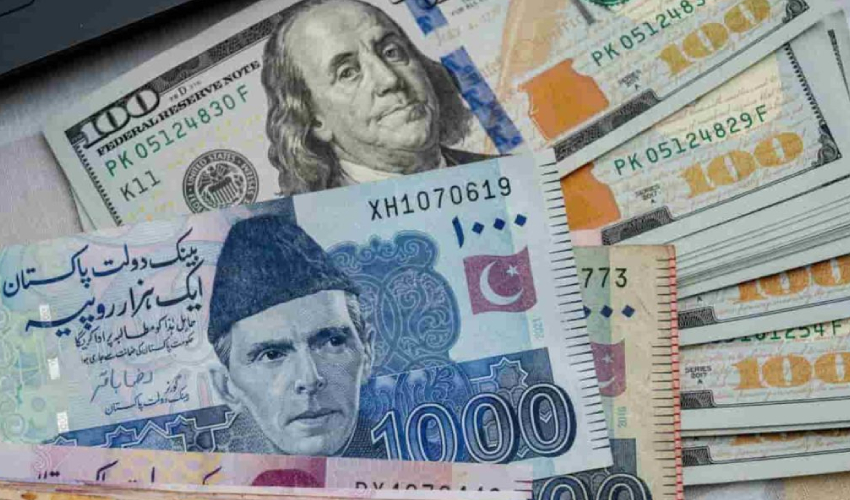

Pakistan's economy shows mixed progress as IMF calls for reforms
The price of the US dollar gained 10 paisas in the early morning trading and reached Rs280 against the Pakistani rupee in the interbank trading on Monday—the first trading day of the business week.
The IMF report on Pakistan’s economy and the latest report on the current account deficit along with the state bank-held foreign reserves led to the depreciation of local units.
The International Monetary Fund (IMF) has released a report, analyzing Pakistan's economic situation, painting a picture of mixed progress with promising improvements alongside persistent challenges.
Pakistan's economic growth rate is projected to remain steady at 2% for the current fiscal year. This stability signifies progress compared to the tumultuous economic rollercoaster the country experienced earlier in 2023.
The country's foreign exchange reserves have seen a significant increase, jumping from $4.5 billion in July 2023 to $8.2 billion currently.
This rise in reserves indicates improved financial stability and potential for future debt servicing. The report acknowledges that Pakistan successfully met all economic improvement targets set for the July-September quarter, showcasing the government's commitment to fiscal discipline.
All Rights Reserved ® Copyright © 2024